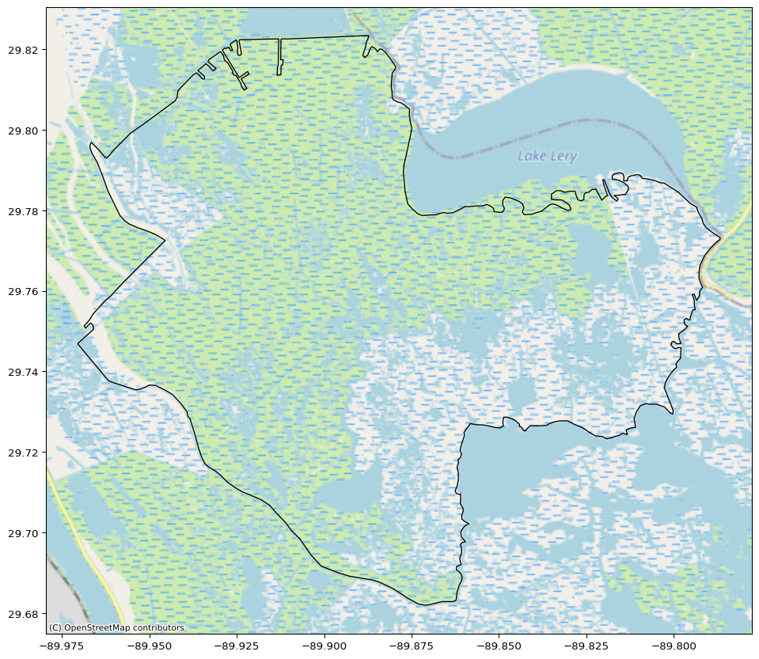
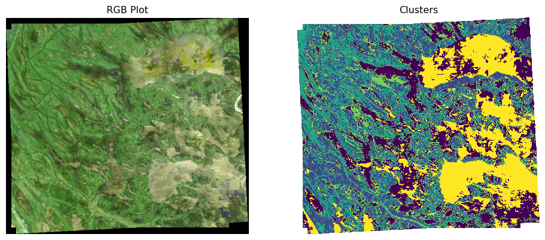

%pip install -q -e ..Clustering Land Cover
Land cover classification at the Mississppi Delta
In this notebook, you will use a k-means unsupervised clustering algorithm to group pixels by similar spectral signatures. k-means is an exploratory method for finding patterns in data. Because it is unsupervised, you do not need any training data for the model. You also cannot measure how well it “performs” because the clusters will not correspond to any particular land cover class. However, we expect at least some of the clusters to be identifiable as different types of land cover.
You will use the harmonized Sentinal/Landsat multispectral dataset. You can access the data with an Earthdata account and the earthaccess library from NSIDC:
STEP 1: SET UP
The code for a caching decorator is in landmapyr/cached.py, which you can use in your code. This decorator will pickle the results of running a do_something() function, and only run the code if the results do not already exist. To override the caching, for example temporarily after making changes to your code, set override=True. Note that to use the caching decorator, you must write your own function to perform each task. See examples in landmapyr/delta.py and landmapyr/reflectance.py.
from landmapyr.initial import robust_code
robust_code()Watch out for override=True or False with `@cached().
STEP 2: STUDY SITE
For this analysis, you will use a watershed from the Water Boundary Dataset, HU12 watersheds (WBDHU12.shp). This involves drilling down under the **Watershed Boundary Dataset (WBD)** section of the page through the AWS site linked via [Download the WBD by 2-digit Hydrologic Unit (HU2)](https://prd-tnm.s3.amazonaws.com/index.html?prefix=StagedProducts/Hydrography/WBD/HU2/), to theShapedirectory and the specific entry in the folder, coded asf”WBD_{region}_HU2_Shape.zip”forregion = ‘08. We use the@cached(’wbd_08’)decorator to pull out the shape file from this zip file,f’WBDHU{huc_level}.shp’with [Hydrologic Unit Code (HUC)](https://nas.er.usgs.gov/hucs.aspx)huc_level = 12`. See also
- Wikipedia
- Hexagonal units used in the terrestrial model by George R Robinson
- Environmental Monitoring and Assessment Program (EMAP) hexagon grid (Spence and White 1992).
- EPA 40km Hexagons for Conterminous United States
- Bousquin J. Discrete Global Grid Systems as scalable geospatial frameworks for characterizing coastal environments. Environ Model Softw. 2021 Dec 1;146:1-14. doi: 10.1016/j.envsoft.2021.105210. PMID: 35355513; PMCID: PMC8958999.
- Using camera traps and N-mixture models to estimate population abundance: Model selection really matters
- dggridR
One way to get the HUC Code is to go to the TNM Download (v2.0) under Data on left, check Watershed Boundary Dataset (WBD), and click Show next to that text. A dense overlay will appear; zoom in to desired region and look for code like HUC 12-070900020604 (for Lake Mendota).
- Download the Water Boundary Dataset for region ‘08’ (Mississippi)
- Select watershed
080902030506(Plaquemines Parish, bordering Lake Lery and Grand Lake) - Generate a site map of the watershed
Try to use the caching decorator. This is now fixed in landmapyr. However, the compute_reflectance_da and merge_and_composite_arrays decorated functions still have static decorators. This will take similar coding.
from landmapyr.reflect import read_delta_gdf
from landmapyr.plots import plot_delta_gdfFollowing is kept here for the moment and will be removed next week.
%run read_delta.py# Isle Royale: '041800000101'
# Lake Mendota: '070900020604'
# Lake Monona: '070900020702'
# Mississippi Delta: '080902030506'
delta_gdf = read2_delta_gdf(huc_region='08', watershed='080902030506',
dissolve=False, func_key='wbd_08', override=True)
plot_delta_gdf(delta_gdf)delta_gdf = read_delta_gdf(huc_region='08', watershed='080902030506',
dissolve=True)
plot_delta_gdf(delta_gdf)
Alternative HV plot:
from landmapyr.hv_plots import hvplot_delta_gdf
hvplot_delta_gdf(delta_gdf)We chose this watershed because it covers parts of New Orleans and is near the Mississippi Delta. Deltas are boundary areas between the land and the ocean, and as a result tend to contain a rich variety of different land cover and land use types.
Write a 2-3 sentence site description (with citations) of this area that helps to put your analysis in context.
YOUR SITE DESCRIPTION HERE
STEP 3: MULTISPECTRAL DATA
Build a GeoDataFrame, which will allow you to plot the downloaded granules to make sure they line up with your shapefile. You could also use a DataFrame, dictionary, or a custom object to store this information.
- Unified Metadata Model (UMM)
- For each search result:
- Get the following information (HINT: look at the [‘umm’] values for each search result):
- granule id (UR)
- datetime
- geometry (HINT: check out the shapely.geometry.Polygon class to convert points to a Polygon)
- Open the granule files. Open one granule at a time with
earthaccess.open([result]. - For each file (band), get the following information:
- file handler returned from
earthaccess.open() - tile id
- band number
- file handler returned from
- Get the following information (HINT: look at the [‘umm’] values for each search result):
- Compile all the information you collected into a GeoDataFrame.
Open, crop, and mask data
This will be the most resource-intensive step. Cache results using the cached decorator. I also recommend testing this step with one or two dates before running the full computation. Consider a function for opening a single masked raster, applying the appropriate scale parameter and cropping.
- For each granule:
- Open the Fmask band, crop, and compute a quality mask for the granule. You can use the following code as a starting point, making sure that
mask_bitscontains the quality bits you want to consider:
- Open the Fmask band, crop, and compute a quality mask for the granule. You can use the following code as a starting point, making sure that
- For each band that starts with ‘B’:
- Open the band, crop, and apply the scale factor
- Name the DataArray after the band using the
.nameattribute - Apply the cloud mask using the
.where()method - Store the DataArray in your data structure (e.g. adding a
GeoDataFramecolumn with theDataArrayin it. Note that you will need to remove the rows for unused bands)
from landmapyr.reflect import compute_reflectance_da, merge_and_composite_arrays
from landmapyr.earthaccess import search_earthaccessThere is no need to use Store Magic, as we are already caching with pickle via the @cached decorator that is embedded in the code. That is, if reflectance_da_df and reflectance_da have already been computed, they will be retrieved from pickle jars where they were cached. These can be overridden with the override=True argument to compute_reflectance_da() and merge_and_composite_arrays() functions, respectively.
results = search_earthaccess(delta_gdf, ("2023-05", "2023-09"))
reflectance_da_df = compute_reflectance_da(results, delta_gdf)Merge and Composite Data
You will notice for this watershed that:
- The raster data for each date are spread across 4 granules
- Any given image is incomplete because of clouds
- For each band:
- For each date:
- Merge all 4 granules
- Mask any negative values created by interpolating from the nodata value of
-9999(rioxarrayshould account for this, but does not appear to when merging. If you leave these values in they will create problems down the line.)
- Concatenate the merged DataArrays along a new date dimension
- Take the mean in the date dimension to create a composite image that fills cloud gaps
- Add the band as a dimension, and give the DataArray a name
- For each date:
- Concatenate along the band dimension
reflectance_da = merge_and_composite_arrays(reflectance_da_df)reflectance_da.shape(10, 556, 624)STEP 4: K-MEANS
Looking at this with KS section The reflectance_da has Band (10 levels), x,y. See HLS user guide (look under module) Table 6. Bands 10,11 are thermal and in different units. Reflectance are scaled 0-1.
- account for different scales
- or drop these bands (preferred here)
Steps:
- remove bands 10,11
- take care of NAs
- reshape
Cluster your data by spectral signature using the k-means algorithm.
- Convert your DataArray into a tidy DataFrame of reflectance values (hint: check out the
.to_dataframe()and.unstack()methods) - Filter out all rows with no data (all 0s or any N/A values)
- Fit a k-means model. You can experiment with the number of groups to find what works best.
from landmapyr.reflect import reflectance_kmeans, reflectance_rangemodel_df = reflectance_kmeans(reflectance_da)# Check ranges.
reflectance_range(model_df)| min | max | |
|---|---|---|
| band | ||
| 1 | 0.0005 | 0.35600 |
| 2 | 0.0040 | 0.38640 |
| 3 | 0.0177 | 0.46760 |
| 4 | 0.0134 | 0.49400 |
| 5 | 0.0016 | 0.57895 |
| 6 | 0.0018 | 0.49960 |
| 7 | 0.0017 | 0.35720 |
| 9 | 0.0003 | 0.00335 |
| clusters | 0.0000 | 5.00000 |
STEP 5: PLOT
Create a plot that shows the k-means clusters next to an RGB image of the area. You may need to brighten your RGB image by multiplying it by 10. The code for reshaping and plotting the clusters is provided for you below, but you will have to create the RGB plot yourself!
So, what is .sortby(['x', 'y']) doing for us? Try the code without it and find out.
Notes on RGB plot. Uses .sel() method to select bands (see HLS user guide for band numbers). Use .rgb() method to plot. But numbers are 0-1 and need to be 8-bit integers; rescale to 0-255. Use .astype() method to convert type and .where(rgb!=np.nan) method to drop NAs
from landmapyr.reflect import reflectance_rgb
from landmapyr.plots import plot_cluster
rgb_sat = reflectance_rgb(reflectance_da)plot_cluster(rgb_sat, model_df)
Above is not perfect. Alternative HV plot:
from landmapyr.hv_plots import hvplot_cluster
hvplot_cluster(rgb_sat, model_df)Interpret your plot.
YOUR PLOT HEADLINE AND DESCRIPTION HERE